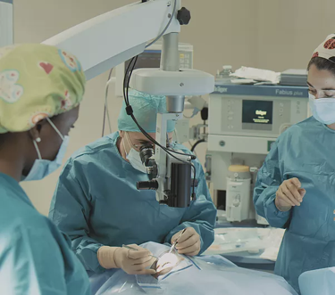
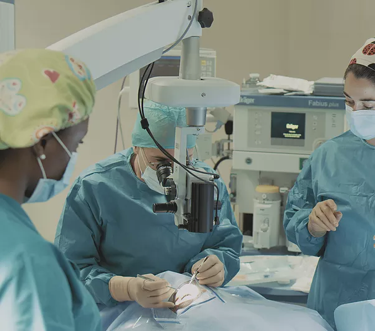

.png)
Nossa história, onde começmos e onde vamos
O centro médico Salomão, surgiu de uma ideia e vontade que o mesmo teve ao ajudar as pessoas. O mesmo teve como incentivo, ver as pessoas a sofrerem sem ter como se curarem das suas doenças por falta de valores, foi ai que o mesmo pensou oque poderia fazer para ver essas pessoas livres dessas doenças. Um dia ele teve a iniciativa de se dirigir a um paciente para saber oque o mesmo sentia, e se já havia sido atendido, ao que ele respondeu: Senhor estamos aqui a já três (3) dias e ninguém nos atende, temos medo que nos venha acontecer o pior, porque a cada dia que passa a criança piora mais.
Sua primeira acção
Tocado por essa explicação o Sr Salomão dirigiu-se até a sala dos médicos para saber oque se passava para não atenderem o paciente que já estava naquela instituição a 3 dias. Chegando lá, ele perguntou: Sr boa tarde, desculpe eu estou ai acompanhado com aquela criança e já estamos a 3 dias que não nos atendem, por favor se o sr puder fazer alguma coisa para nos ajudar por favor ajude-nos, a criança está muito mal. Porém o doutor respondeu: O sr está aqui a quanto tempo? porque se estivesse aqui a mais tempo deverias saber que eu mandei a sr comprar luvas para o tratamento da doença da bebê, porém ela alega que não tem dinheiro nem para luvas. Agora eu pergunto, oque uma pessoa vem fazer ao hospital se nem 100kzs pra comprar luvas ela tem? Nós aqui também não temos este matérial por isso mandei ela comprar, se ela trazer, eu mesmo tratarei da situação dela, porque sem luvas eu não posso fazer nada, nada mesmo, somos proibidos a trabalhar sem matérial.
Pagando a dívida das luvas
Então o senhor Salomão tirou do seu valor e foi comprar as luvas e deu-o ao dotor, porém não se tratava de luvas plásticas para o trabalho, porque quando o sr Salomão olhou na esquina do armário percebeu que o mesmo estava cheio de luvas e outros materiais. O doutor olhando que o mesmo trouxe as luvas, pediu um minuto e que já voltaria a lhe atender, porém o mesmo saiu de outra porta de trás e foi-se embora. Aborrecido com aquela situação o sr Salomão lamentou o facto e derramou lagrimas, foi ai que ele pegou na criança e o levou a outro centro médico "Centro médico Salomão".
.jpg)
Trocando de centro médico
Posto neste Centro médico, os doutores olhando a gravidade da criança correram para socorrer a criança de imediato sem se importar com o quanto custava o tratamento.
.jpg) 

Assustado com a condição do centro médico, o sr Salomão entregou tudo a Deus, pois o mesmo acreditava numa fortuna para se pagar o tratamento da criança. Colocado na sala de urgência, sob os cuidados médicos, um doutor saiu para conversar com os responsáveis da criança.
.jpg)
Boa tarde meus senhores, espero que estejam todos bem e não se preocupem porque a saúde da criança corre um percurso normal, graças a Deus conseguimos acudi-lo a tempo, por isso o grave já passou. Por tanto, os nossos serviços aqui são cobrados com base na grávidade da doença, e o vosso filho encontrava-se em situação grave como vcs mesmo viram, os gastos feitos estão no total de 100 mil kzs, a hospedagem durante os dias em que ele vâ se recuperar está no valor de 60 mil kzs.
Comovido com a a receção ele paga e é regeitado
Olhando o senhor salomão pela forma como foi atendido, pegou um chek de 200 mil kzs e fez o pagamento porém, disse ao doutor que os 40 mil amais que tinha por receber, que ele mesmo o recebesse, disse então o doutor: Obrigado senhor, mais não posso aceitar sua oferta pelo trabalho que eu realizei, o senhor não pode se sentir na obrigação de me agradecer pois esse é o meu trabalho e sou grato por ter a oportunidade de realiza-lo, porque oque sei deve ser partilhado e deve servir para beneficiar alguém, eu é que me sinto honrado em saber que os senhores acreditaram em nós, e confiaram a saúde do vosso filho aos nossos cuidados, obrigado a vós por acreditarem na nossa competência.
.jpg)